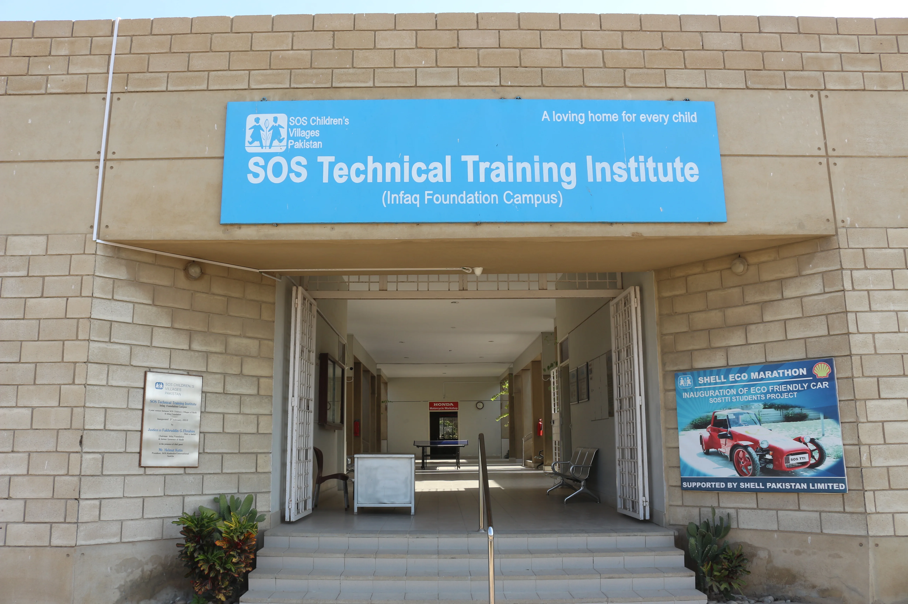

The story of SOSTTI since its inauguration in 2010
The SOS Technical Training Institute (INFAQ Foundation Campus) is a joint venture between SOS Children's Villages of Sindh and INFAQ Foundation. Under a memorandum of understanding which was signed in 2007, INFAQ Foundation has provided land, building, workshop equipment, computers, furniture, fixtures and training aids for this institute in their CDSS complex at Korangi.
The SOS Children's Villages of Sindh have agreed to run this institute as a social welfare project for the benefit of SOS children, students of Korangi Academy and other underprivileged members of society as well as the community at large in need of technical education.

Provided by INFAQ Foundation in their CDSS complex at Korangi
Complete workshop equipment, computers, and training aids
Managed by SOS Children's Villages for community benefit
The collaboration between SOS Children's Villages of Sindh and INFAQ Foundation has created a sustainable model for technical education that serves multiple beneficiary groups: